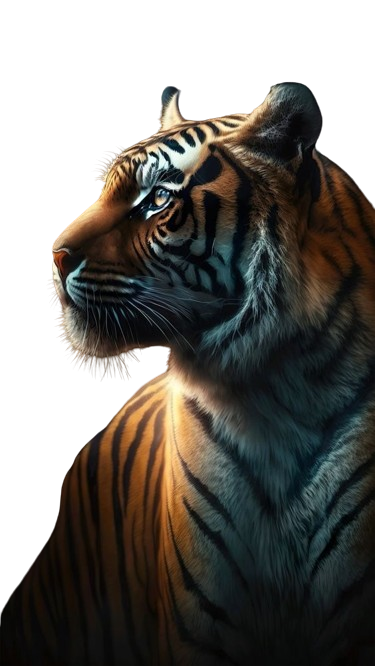
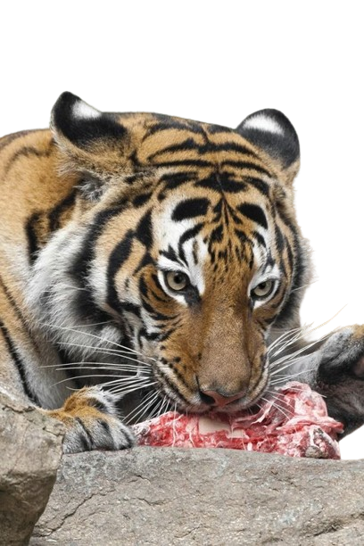

Hábitat y Ubicación Geográfica
El tigre es un felino que se encuentra principalmente en los bosques densos y selvas de Asia. Las subespecies de tigres tienen distribuciones geográficas diferentes:
- Tigre de Bengala: India, Nepal, Bután, Bangladesh y Birmania.
- Tigre de Siberia: Rusia oriental, China y Corea del Norte.
- Tigre de Sumatra: Isla de Sumatra en Indonesia.
- Tigre de Indochina: Camboya, Laos, Malasia, Tailandia y Vietnam.
- Tigre de Malasia: Península de Malasia.
Hábitos Alimenticios y Reproductivos
Los tigres son carnívoros y se alimentan principalmente de mamíferos grandes como ciervos
jabalíes y búfalos. Son cazadores solitarios y nocturnos. La gestación dura alrededor de 3.5 meses
y generalmente nacen de 2 a 4 cachorros en una camada.

Estado de Conservación
La situación de conservación de los tigres es preocupante. Todas las subespecies de tigres están clasificadas como
en peligro de extinción debido a la caza furtiva, la destrucción del hábitat y el conflicto con los humanos.
Varias organizaciones están trabajando para proteger a los tigres y su hábitat,
pero se necesita un esfuerzo concertado para evitar su extinción.

Tabla de Subespecies de Tigres
| Subespecie | Distribución Geográfica | Comidas |
|---|---|---|
| Tigre de Bengala | India, Nepal, Bután, Bangladesh y Birmania | Ciervos, antílopes, jabalíes, y presas pequeñas ocasionalmente |
| Tigre de Siberia | Rusia oriental, China y Corea del Norte | Similar al Tigre de Bengala: ciervos, jabalíes, y otros mamíferos grandes |
| Tigre de Sumatra | Isla de Sumatra en Indonesia | Ciervos, jabalíes y mamíferos grandes en la isla de Sumatra |
| Tigre de Indochina | Camboya, Laos, Malasia, Tailandia y Vietnam | Ciervos, búfalos, y jabalíes en el sudeste asiático |
| Tigre de Malasia | Península de Malasia | Ciervos, jabalíes, y otros mamíferos grandes en la península de Malasia |